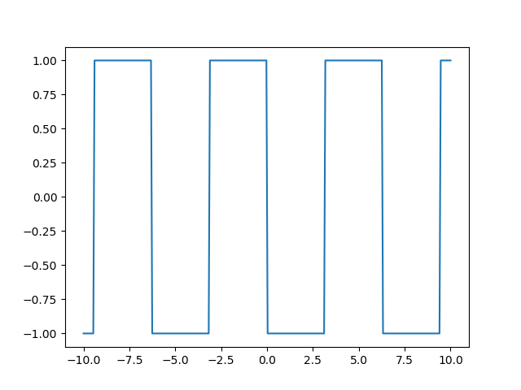

-
Figure_1
import matplotlib.pyplot as plt
import numpy as np
# linspace 第一个参数序列起始值, 第二个参数序列结束值,第三个参数为样本数默认50
x = np.linspace(0, 3 * np.pi, 100)
y = np.sin(x)
plt.rcParams['font.sans-serif']=['SimHei'] #加上这一句就能在图表中显示中文
plt.rcParams['axes.unicode_minus']=False #用来正常显示负号
plt.subplot(1,2,1)
plt.title(r'$f(x)=sin(x)$')
plt.plot(x, y)
#plt.show()
x1 = [t*0.375*np.pi for t in x]
y1 = np.sin(x1)
plt.subplot(1,2,2)
# plt.title(u"测试2") #注意：在前面加一个u
plt.title(r'$f(x)=sin(\omega x), \omega = \frac{3}{8} \pi$')
plt.plot(x1, y1)
plt.show()
-
基本周期方波图形
import matplotlib.pyplot as plt
import numpy as np
x=np.linspace(-10,10,300)
y=[]
for i in x:
if np.sin(i)>0:
y.append(-1)
else:
y.append(1)
plt.plot(x,y)
plt.show()
-
周期方波傅立叶级数系数的图示a.

import matplotlib.pyplot as plt import numpy as np k = np.linspace(-30,30,60) a_k1 = np.sin(2*k*np.pi*(1/4))/(np.pi*k) plt.scatter(k,a_k1,s=10) plt.xticks((-30,-20,-10,0,10,20,30)) plt.title('$a_k=\\frac{\sin(2k*\pi*\\frac{T_1}{T})}{\pi*k},T=4T_1$' ,fontsize=19) plt.show()